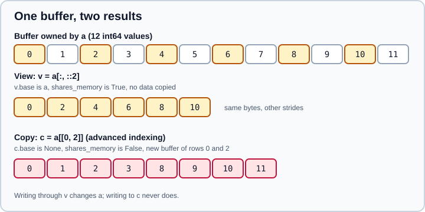

Copies and Views
|
This content was generated with the assistance of AI and should be verified against the official documentation before being relied on in production. |
This page was checked in October 2026 against NumPy 2.5 (2.5.4 is the latest patch release). Examples target Python 3.13 or 3.14 and were run on Python 3.13. The printed output of every example was produced with NumPy 2.5.4. A NumPy array is a small header (shape, strides, dtype, a pointer) plus a data buffer. A view is a new header over the same buffer, so writes through either array are seen by the other. A copy has its own buffer. Most surprising NumPy bugs are a mix-up between the two, and NumPy 2.0 changed the meaning of copy=False in a way that breaks older code.
The mental model

Three rules cover most cases:
-
Basic indexing and slicing return views. So do
transpose/.T,reshapewhen possible,ravelwhen possible,view,np.broadcast_to,np.moveaxis,swapaxes,squeeze,expand_dimsanddiagonal(read-only). -
Advanced indexing (integer arrays, lists, boolean masks) returns copies.
-
Operations that compute new values, such as arithmetic,
np.round,np.sort,astypeandcopy(), produce new arrays.
Whether an array owns its data is visible in arr.flags.owndata and arr.base. The base attribute points at the array that owns the memory (the root owner, not the immediate parent), and is None for an array that owns its data. Because base can be None even for results that were produced by another operation, and because chains of views all point to the root, do not use is comparisons on .base as a test for sharing. np.shares_memory computes the exact answer, and np.may_share_memory is a fast bounds-only check that can report false positives.
import numpy as np
a = np.array([[0, 1, 2, 3], [4, 5, 6, 7], [8, 9, 10, 11]])
print(a.flags.owndata, a.base)
v = a[:, ::2]
print("slice ", v.base is a, v.flags.owndata, np.shares_memory(a, v))
f = a[[0, 1]]
print("fancy ", f.base is None, np.shares_memory(a, f))
m = a[a > 5]
print("mask ", np.shares_memory(a, m))True None slice True False True fancy True False mask False
Views you get without asking
Selecting with slices and reshaping with compatible strides gives views. The reshape rules are covered in Reshaping, Stacking and Splitting; here is how they interact with sharing.
r = a.reshape(4, 3)
print("reshape", r.base is a, np.shares_memory(a, r))
t = a.T
print("T ", t.base is a, t.flags.c_contiguous)
rt = t.reshape(12)
print("T.reshape", np.shares_memory(a, rt), rt.flags.owndata)
print("ravel", np.shares_memory(a, a.ravel()),
"ravel of T", np.shares_memory(a, t.ravel()),
"flatten", np.shares_memory(a, a.flatten()))reshape True True T True False T.reshape False False ravel True ravel of T False flatten False
-
a.reshape(4, 3)is a view because a C-contiguous array can be re-read with new shape and strides. -
a.Tis always a view, but it is no longer C-contiguous, soa.T.reshape(12)anda.T.ravel()must copy. The reshape that copies returns an array that may itself have abase(an intermediate buffer), soowndatacan beFalseeven though no memory is shared witha. Test sharing withnp.shares_memory. -
ravelreturns a view when it can and a copy otherwise.flattenalways copies. Useravelfor reading andflattenwhen you need an array you may modify freely.
To demand a view, ask for it. reshape accepts copy=False, which raises instead of silently copying:
try:
t.reshape(12, copy=False)
except ValueError as e:
print("ValueError:", e)
print(np.reshape(a, (4, 3), copy=False).base is a)ValueError: Unable to avoid creating a copy while reshaping. True
Setting the shape attribute in place (t.shape = (12,)) used to be the way to do this and raised an AttributeError. Assigning to shape is deprecated in NumPy 2.5, assigning to strides has been deprecated since NumPy 2.4, and assigning to dtype is deprecated as well; use reshape, np.lib.stride_tricks.as_strided and view respectively.
Modifying through views and copies
b = a[1:]
b += 100 # in-place on a view: changes a
print(a)[[ 0 1 2 3] [104 105 106 107] [108 109 110 111]]
Source: NumPy user guide: View
a2 = np.array([[0, 1, 2, 3], [4, 5, 6, 7], [8, 9, 10, 11]])
x = a2[[0, 2]]
x += 100 # x is a copy: a2 is untouched
print(a2[0])
a2[[0, 2]] = -1 # assignment through the index: writes into a2
print(a2)
a2[a2 < 0][0] = 5 # chained: assigns into a temporary copy
print(a2[0])
a2[a2 < 0] = 5 # one index expression: works
print(a2)[0 1 2 3] [[-1 -1 -1 -1] [ 4 5 6 7] [-1 -1 -1 -1]] [-1 -1 -1 -1] [[5 5 5 5] [4 5 6 7] [5 5 5 5]]
The asymmetry to remember is that an advanced index on the left-hand side of an assignment writes into the original (it calls __setitem__), while an advanced index on the right or as an intermediate step reads a copy. A mixed chain behaves according to the first step: a3[1:4][[0, 2]] = 99 works because the slice is a view and the final assignment targets that view.
a3 = np.arange(6)
a3[1:4][[0, 2]] = 99
print(a3)[ 0 99 2 99 4 5]
Making copies explicitly
arr.copy(), np.copy(arr) and np.array(arr) create independent arrays with their own buffer. The memory layout of the new array follows the order argument ('K' by default for the method, which keeps the layout of the source). astype always copies by default and takes copy=False to return the same array when no conversion is needed.
Shallow versus deep copies matter for object arrays. copy() copies the pointers, not the Python objects they point to, so nested mutable objects remain shared; copy.deepcopy copies them too.
l = np.empty(3, dtype=object)
l[:] = [[1], [2], [3]]
cp = l.copy()
cp[0].append(5)
print(l[0])
import copy
dc = copy.deepcopy(l)
dc[1].append(7)
print(l[1])[1, 5] [2]
copy=None and copy=False in NumPy 2
Before NumPy 2.0, np.array(x, copy=False) meant "copy only if necessary". In NumPy 2.0 this was split into three values, and copy=False now means "never copy, raise ValueError if a copy is needed". copy=None is the new "copy only if needed", and np.asarray(x) keeps its old meaning.
print(np.asarray(a) is a, np.array(a) is a, np.array(a, copy=None) is a)
print(np.asarray(a, dtype=float) is a)
try:
np.array(a, copy=False, dtype=float)
except ValueError as e:
print("ValueError:", e)True False True False ValueError: Unable to avoid copy while creating an array as requested. If using `np.array(obj, copy=False)` replace it with `np.asarray(obj)` to allow a copy when needed (no behavior change in NumPy 1.x). For more details, see https://numpy.org/devdocs/numpy_2_0_migration_guide.html#adapting-to-changes-in-the-copy-keyword.
Library code written for NumPy 1.x that calls np.array(x, copy=False) therefore breaks whenever a dtype or layout conversion is needed. Replace it with np.asarray(x). A custom __array__ method must also accept the dtype=None and copy=None arguments. See Migrating to NumPy 2.x for the whole list of changes.
Read-only views
An array can protect its data by clearing the writeable flag. This is how NumPy prevents writes through np.broadcast_to results and sliding_window_view, and how you can hand out a view that callers cannot change.
c = np.arange(6).reshape(2, 3)
d = c.view()
d.flags.writeable = False
print(c.flags.writeable, d.flags.writeable)
try:
d[0, 0] = 1
except ValueError as e:
print("ValueError:", e)True False ValueError: assignment destination is read-only
Source: numpy.ndarray.flags
The base array stays writeable, so a read-only view is protection against accidents, not a security boundary. Arrays that come from DLPack imports are read-only and CPU-only; see Interoperability.
Memory retention
A view keeps its base alive. A tiny slice of a huge array therefore pins the whole buffer in memory until the slice is deleted:
big = np.arange(1_000_000)
small = big[:10]
print(small.base is big, small.nbytes, small.base.nbytes)
small = small.copy()
print(small.base)True 80 8000000 None
Source: NumPy user guide: View
Copy a small result when it will outlive the large array, for instance when you store a few rows of a file-sized array in a cache. The same applies to memory-mapped arrays, which are views over a file mapping.
In-place operations and out=
Operators such as += and ufuncs called with out= write into an existing buffer, so on a view they modify the base. Passing out= an array that overlaps an input is safe in current NumPy: ufuncs detect overlap and copy as needed. Functions that always allocate a new array, notably np.round (a copy since the 2.x line) and astype, ignore sharing.
o = np.empty((3, 4), dtype=int)
np.add(a2, 1, out=o)
print(np.shares_memory(a2, o))False
Common pitfalls
-
Treating a slice as independent data.
sub = a[1:3]; sub[0] = 0changesa. -
Expecting a view and getting a copy.
ravel()andreshape()of a non-contiguous array copy silently; usereshape(copy=False)to fail loudly. -
Comparing
.basefor sharing. Usenp.shares_memory. -
Using
np.array(x, copy=False)in a library. It raises in NumPy 2 when a copy is required; usenp.asarray. -
Chained assignment with advanced indexing. The write goes into a temporary.
-
Keeping a huge base alive through a small view; copy small results.
-
Assigning to
shapeorstrides. Deprecated in NumPy 2.5 and 2.4 respectively.
Older tutorials and books
| Older statement | Current behaviour | Use instead |
|---|---|---|
|
Raises |
|
|
Deprecated in NumPy 2.5 |
|
|
Deprecated in NumPy 2.4 |
|
|
|
Follow the NumPy 2 signature |
pandas "returns a view or a copy depending on context" |
In pandas 3.0 Copy-on-Write is the only mode, so a subset never writes through to its parent |
See the pandas pages in this section |
Related pages
-
Basic Indexing and Slicing for the operations that return views.
-
Advanced and Boolean Indexing for the operations that copy.
-
Memory Layout and Strides for why a transpose is a view.